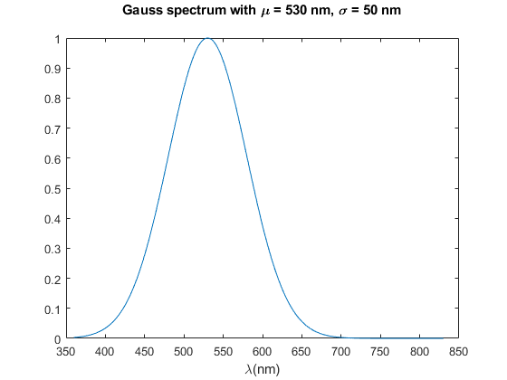

GaussSpectrum
Navigate to: Home | Alphabetic list | Grouped list | Source code: GaussSpectrum.m
Creates a Gaussian spectrum, normalized to peak = 1.0
Contents
Syntax
rv = GaussSpectrum(lam_vec,mean,sdev,varargin)
Input Arguments
- lam_vec: double vector, positive, strictly ascending. The wavelengths
- mean: scalar double. Mean value around which the spectrum is centered
- sdev: scalar double. Standard deviation of spectrum around mean
- varargin: character string. When 'val_only' returns only the value array, not a spectrum
Output Arguments
- rv: struct. A valid spectrum
Algorithm
Computes the values as exp(- (lam_vec-mean).^2 / (2 * sdev^2)). Note that the actual maximum of the value array may be max(rv.val) < 1, and is only max(rv.val) == 1 if lam_vec contains mean as one of the wavelengths.
See also
PlanckSpectrum, CIE_Illuminant, CIE_Illuminant_D
Usage Example
function ExampleGaussSpectrum() lam = 360:830; mean = 530; sdev = 50; g1 = GaussSpectrum(lam, mean, sdev); fprintf('g1.name = %s\n',g1.name); figure(); clf; plot(g1.lam, g1.val); xlabel('\lambda(nm)'); title(sprintf('Gauss spectrum with \\mu = %g nm, \\sigma = %g nm\n', mean, sdev)); end
g1.name = Gauss spectrum for mean 530 nm and sdev 50 nm, normalized to peak = 1